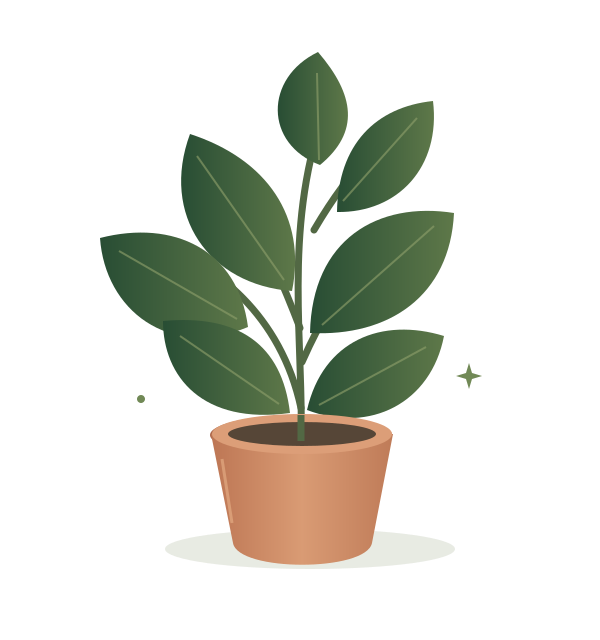
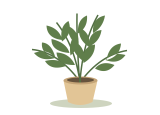
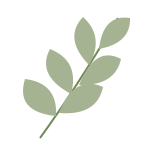

A nudge, right on time
Gentle watering reminders help your plants stay on your radar, even on your busiest days.
A little help for your little jungle
Life gets busy. Your plants get thirsty. Sprout gives you a gentle nudge when it’s time to water, so you can keep the good things growing.
Try SproutA little care goes a long way.

More green. Less “when did I last water this?”
Small nudges. Happy leaves.
You don’t need a green thumb.
Just a little rhythm.
Gentle watering reminders help your plants stay on your radar, even on your busiest days.
A thirsty fern and a laid-back cactus? Give each plant a watering schedule that feels right.
Keep your plants and their last watering in one place. No mental notes. No forgotten windowsills.
Less fuss. More flourishing.
Add your plants. Give them a name, if that’s your thing. (We’re fans of Fernanda.)
Choose a watering interval for each plant. Adjust it as the seasons and your plants change.
Check the soil, water when needed, and mark it done. Sprout keeps track of the next time.
A little peek at Sprout

Boston fern · Living room
Check the soil before you water.
Try the button. Your first happy plant awaits.
This is a preview; it won’t send notifications.
Good questions, naturally.

No green thumb required. Sprout is designed to make the habit of checking your plants easier. Start with a care interval suited to your plant, then adjust as you get to know it.
Nope. The idea is to give each plant its own interval, because a cactus and a fern have very different ideas about a good drink.
Think of a reminder as a time to check in. Feel the soil first and follow your plant’s care needs. Light, temperature, and the season can all affect how quickly soil dries.
Sprout is a made-up app for now. You can try the interactive preview on this page, but there’s no download, account, or real notification service yet.
Make room for a little green
One plant. One reminder. One small habit.